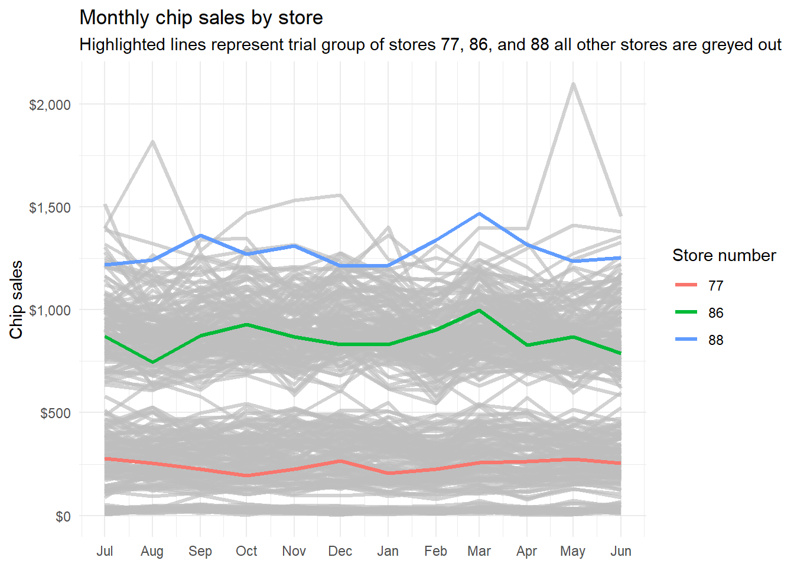
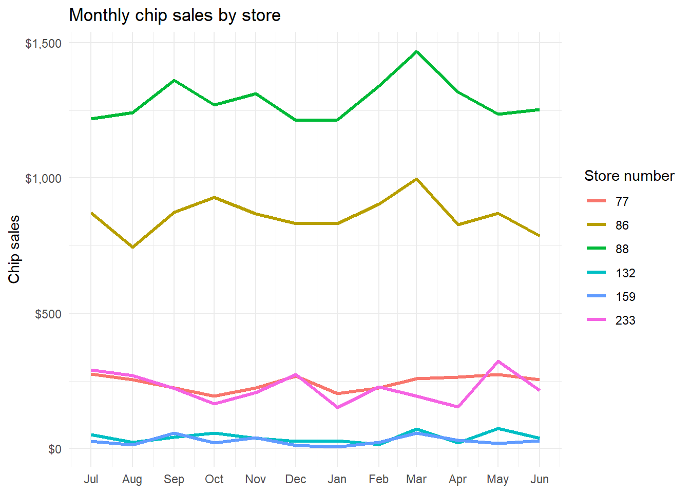

library(tidyverse)
load("data/task1.RData")Task 2
Quarto
I was asked us to evaluate the performance of a store trial which was performed in stores 77, 86, and 88. The first step is to aggregate purchases by customer and total sales at each store by month so that we can compare store performance by month and find a suitable control group to measure the trial group against.
store_data =
full_df %>%
filter(prod_brand!="Old El Paso") %>%
mutate(year=year(date),
month=month(date),
day=day(date),
wday=wday(date),
.before = "date")The average customer performed just under 4 transactions in the year recorded in the dataset.
store_monthly =
store_data %>%
summarize(
across(
.cols = prod_qty:pack_size,
.fns = list(sum=sum),
.names = "{col}"),
transx = n(),
.by = c(year,month,store_nbr,lylty_card_nbr)) %>%
summarize(
date = date(str_glue("{min(year)}-{min(month)}-{01}")),
across(
.cols = prod_qty:transx,
.fns = list(sum=sum,
avg=mean),
.names = "{col}_{fn}"),
cust_nbr = n(),
.by = c(year,month,store_nbr)) %>%
arrange(year,month,store_nbr)
store_monthly# A tibble: 3,169 × 13
year month store_nbr date prod_qty_sum prod_qty_avg tot_sales_sum
<dbl> <dbl> <fct> <date> <dbl> <dbl> <dbl>
1 2018 7 1 2018-07-01 59 1.23 192.
2 2018 7 2 2018-07-01 45 1.18 146.
3 2018 7 3 2018-07-01 263 2.44 1165.
4 2018 7 4 2018-07-01 302 2.50 1318.
5 2018 7 5 2018-07-01 236 2.59 792.
6 2018 7 6 2018-07-01 71 1.51 250.
7 2018 7 7 2018-07-01 224 2.26 1004.
8 2018 7 8 2018-07-01 81 2.13 361.
9 2018 7 9 2018-07-01 85 1.85 290.
10 2018 7 10 2018-07-01 238 2.43 861.
# ℹ 3,159 more rows
# ℹ 6 more variables: tot_sales_avg <dbl>, pack_size_sum <dbl>,
# pack_size_avg <dbl>, transx_sum <int>, transx_avg <dbl>, cust_nbr <int>Next we will visualize stores 77, 86, and 88 in order to get an idea of what their sales pattern looks like over the period data is available.
incomplete_stores =
store_monthly %>%
summarize(mnts=n(),.by = store_nbr) %>%
filter(mnts<12) %>%
pull(store_nbr)
treat_monthly =
store_monthly %>%
filter(!store_nbr %in% incomplete_stores) %>%
mutate(trial =
case_when(store_nbr %in% c(77, 86, 88) ~ 1,
TRUE ~ 0))
treat_monthly %>%
ggplot() +
geom_line(aes(x=date,
y=tot_sales_sum,
color=store_nbr),
linewidth=1.2) +
gghighlight::gghighlight(trial==1,
use_direct_label = FALSE) +
scale_x_date(labels = scales::date_format(format = "%b"),
breaks = scales::date_breaks()) +
scale_y_continuous(labels = scales::dollar_format()) +
labs(title = "Monthly chip sales by store",
subtitle = "Highlighted lines represent trial group of stores 77, 86, and 88 all other stores are greyed out",
y = "Chip sales",
x = NULL,
color = "Store number") +
theme_minimal()
Based on the graph, store 77 seems to be a smaller store, store 86 seems to be mid-sized and store 88 is a large, top performing store. A control store to compare to each would need to match the category of the trial store. In order to calculate similarity, we can first expand the store numbers to a grid of each store id paired with every other store id, then run a function using the filtered data of each stores pivoted wider to compare.
store_nbrs =
treat_monthly %>%
transmute(store_nbr = as.character(store_nbr)) %>%
pull(store_nbr) %>%
unique()
sales_correlations =
expand_grid(c(77,86,88),store_nbrs) %>%
select(nbr1=1,nbr2=2) %>%
filter(nbr1!=nbr2) %>%
mutate(across(everything(),as.numeric)) %>%
mutate(correlations=
map2_dbl(
nbr1,
nbr2,
\(nbr1,nbr2){
treat_monthly %>%
select(year, month, store_nbr, tot_sales_sum) %>%
filter(!month %in% 2:6,
store_nbr %in% c(nbr1, nbr2)) %>%
pivot_wider(names_from = store_nbr,
values_from = tot_sales_sum) %>%
summarize(correlation = cor(x=pick(3),y=pick(4),
method = "pearson")) %>% pull()
},.progress = TRUE)) ■■■■■■■■■■■■ 37% | ETA: 5s ■■■■■■■■■■■■■■■■■■■■■■■ 72% | ETA: 2ssales_correlations %>%
group_by(nbr1) %>%
slice_max(order_by = correlations, n = 3)# A tibble: 9 × 3
# Groups: nbr1 [3]
nbr1 nbr2 correlations
<dbl> <dbl> <dbl>
1 77 233 0.974
2 77 41 0.900
3 77 50 0.890
4 86 132 0.864
5 86 138 0.856
6 86 155 0.853
7 88 159 0.914
8 88 91 0.912
9 88 204 0.880comp_stores = sales_correlations %>%
group_by(nbr1) %>%
slice_max(order_by = correlations, n = 1) %>%
pivot_longer(cols = nbr1:nbr2,
values_to = "stores") %>%
pull()
treat_monthly %>%
filter(store_nbr %in% comp_stores) %>%
ggplot() +
geom_line(aes(x=date,
y=tot_sales_sum,
color=store_nbr),
linewidth=1.2) +
scale_x_date(labels = scales::date_format(format = "%b"),
breaks = scales::date_breaks()) +
scale_y_continuous(labels = scales::dollar_format()) +
labs(title = "Monthly chip sales by store",,
y = "Chip sales",
x = NULL,
color = "Store number") +
theme_minimal()